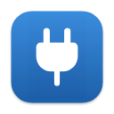

GoodWe Status reads your battery and grid from your SEMS Portal account (the one the SEMS+ app uses). Your email and password are saved in your Mac’s Keychain.
Next, allow notifications so you hear when the grid goes off. Choose the Alerts style to keep them on screen.